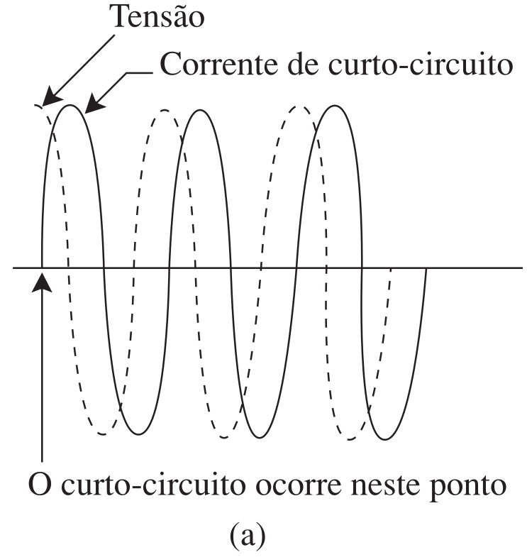
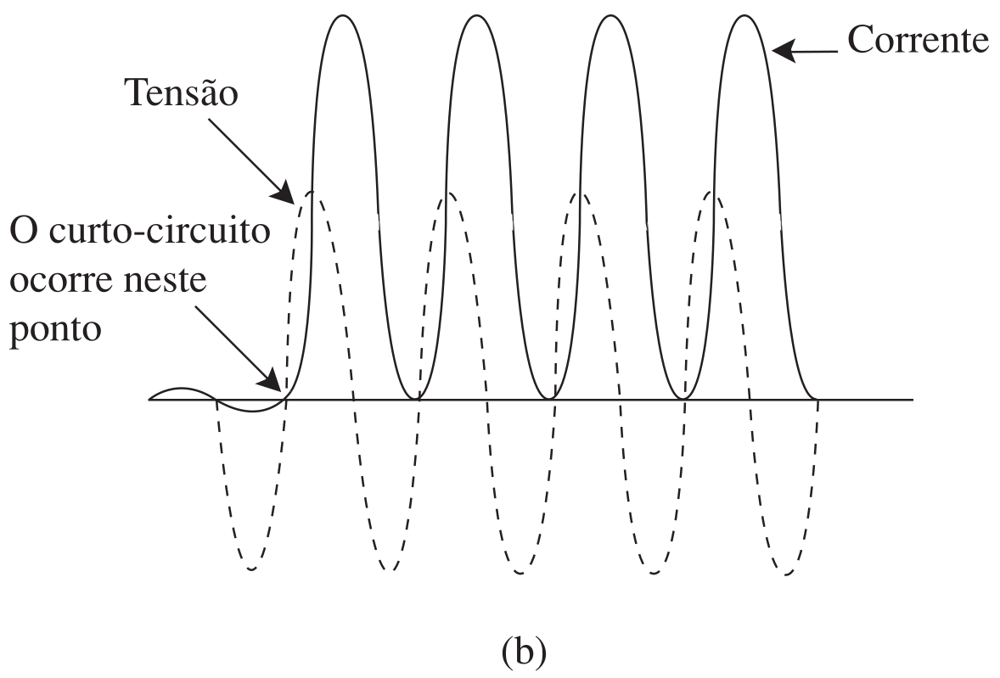
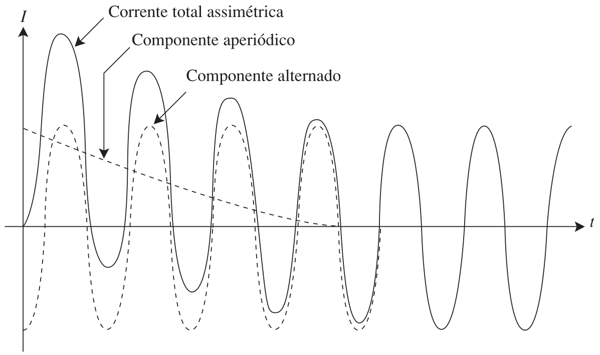
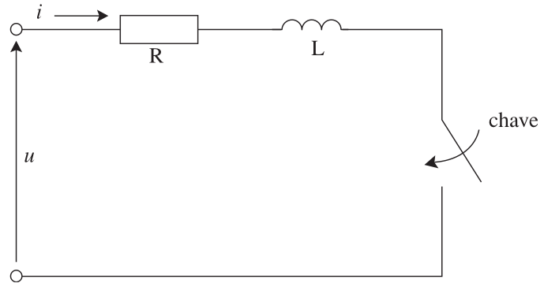
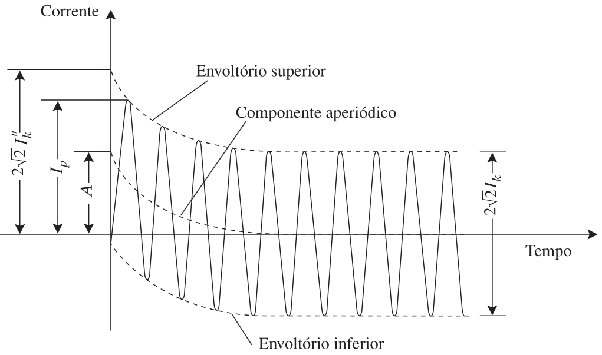
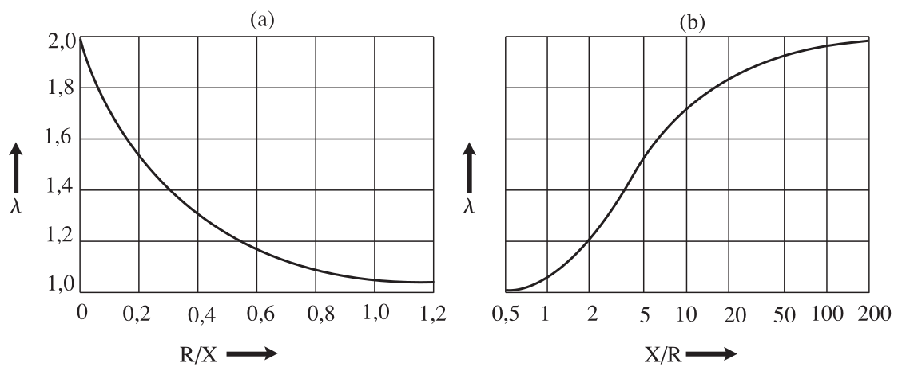
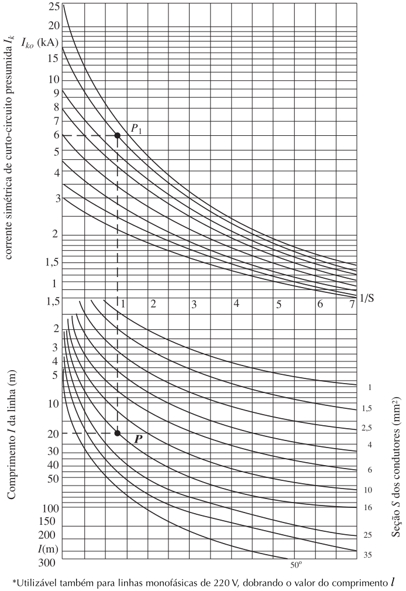

Instalações Elétricas - Ademaro A. M. B. Cotrim Capítulo 10 - Correntes de Curto-Circuito
Prof. Dr. Thales A. C. Maia
UFMG - DEE
Introdução
Fatores Determinantes da Corrente de Falta
A avaliação das correntes de falta passíveis de ocorrer em uma instalação é um problema complexo que depende de diversos fatores:
Instante do início da falta em relação à onda senoidal da tensão aplicada (fase inicial).
Impedância de toda a rede de média e alta tensão que alimenta o defeito.
Tipo e potência das fontes envolvidas.
Impedância das linhas de baixa tensão até o local do defeito.
Resistência da falta, dependendo do contato e do arco elétrico.
As Fontes de Correntes de Falta
Sistemas geradores
São considerados fontes de correntes de falta:
O sistema da concessionária de energia elétrica.
Os geradores síncronos.
Os compensadores síncronos.
Os motores (tanto síncronos quanto de indução).
A corrente produzida por uma máquina girante é limitada pela sua impedância interna (variável no tempo) e pela impedância até a falta.
Análise da Corrente de Curto-Circuito
Relação \(X\) e \(R\)
Quando ocorre um curto-circuito, estabelece-se instantaneamente um percurso de baixa impedância entre as fontes e o ponto de falta.
O fator de potência de curto-circuito (\(\cos\phi_k\)) é determinado a partir da reatância indutiva e da resistência totais do percurso da corrente.
Se a reatância for muito maior que a resistência (\(X \gg R\)), a corrente de curto será atrasada em quase \(90^\circ\).
Se o curto ocorrer quando a tensão passa pela crista, a corrente será simétrica.
Se o curto ocorrer quando a tensão for zero, a corrente será totalmente assimétrica.


Fig. 1: Correntes de curto-circuito em um sistema com fator de potência praticamente igual a zero; (a) corrente simétrica, (b) corrente totalmente assimétrica
A defasagem entre tensão e corrente será \(\Phi_k = 45^o\) e a máxima assimetria será obtida quando o curto-circuito ocorrer a \(90 + 45 = 135^{o}\) do ponto zero da onda de tensão.
Fig. 2: Curto-circuito com máxima assimetria em um circuito com a resistência igual à reatância.
A resultando é formada por duas componentes: uma alternada (senoidal) e outra contínua. A soma de ambas dará a corrente assimétrica.
Fig. 3: Componentes alternado e contínuo de uma corrente de curto-circuito assimétrica.
O componente contínuo não continua a circular com um valor constante, a menos que a resistência do circuito seja zero. No entanto, na prática, todos os circuitos possuem resistência, e o componente contínuo — chamado ‘aperiódico’ — decrescerá.

Fig. 4: Corrente de curto-circuito assimétrica.
Fundamentos dos Cálculos
Circuito simplificado
A expressão básica para o cálculo de qualquer corrente de falta deriva da Lei de Ohm:
\[ I_F = \frac{U}{Z} \]

Fig. 5: Circuito RL equivalente para falta.
No entanto, o regime transitório inicial (antes do estabilização) gera os seguintes valores notáveis:
Corrente Simétrica Inicial (\(I''_k\)): Valor eficaz no instante inicial, mantendo \(Z\) constante.
Corrente Permanente (\(I_k\)): Valor eficaz após a cessação dos fenômenos transitórios.
Corrente de Crista (\(I_p\)): Valor instantâneo máximo possível, dependendo da assimetria (relação \(R/X\)).

Fig. 6: Corrente de curto-circuito presumida relativa a uma falta distante do gerador.
Premissas para o Cálculo em Baixa Tensão
Nos cálculos de instalações de baixa tensão, adota-se a pior condição de assimetria (onde a tensão inicial da falta é \(\Psi = \phi_k \pm 90^\circ\)) e assumem-se as seguintes condições:
Falta direta e simultânea: Despreza-se a resistência de contato e o arco elétrico.
Falta distante do gerador: A fonte está eletricamente distante, portanto a corrente permanente iguala-se à subtransitória/inicial (\(I_k = I_k^{\prime\prime}\)).
Rede radial e invariável: A tensão da fonte e as impedâncias são constantes; o tipo de falta (ex: trifásico) não se altera durante o evento.
Efeitos desprezados: Capacitâncias das linhas, faltas duplas à terra e admitâncias paralelas não entram na conta.
Transformadores: Seus comutadores de tap são considerados na posição principal.
\(\Phi_k\) é o ângulo de defesagem entre tensão e corrente.
Cálculo da Corrente de Crista
A corrente de crista (\(I_p\)) é calculada multiplicando-se o valor eficaz da simétrica inicial por um fator de assimetria \(\lambda\) e por \(\sqrt{2}\):
\[ I_p = \lambda \sqrt{2} I''_k \]
Onde o fator empírico \(\lambda\) depende da relação \(R/X\) do circuito:
\[ \lambda = 1,02 + 0,98 e^{-3(R/X)} \]
Nota: Quanto maior a resistência em relação à reatância (maior \(R/X\)), menor a assimetria e menor o pico inicial.

Fig. 7: Fator \(\lambda\) em função de (a) R/X e de (b) X/R.
Tab. 1: Valores de \(\lambda\) e de \(\lambda \sqrt{2}\) em função de \(\cos \Phi_k\) e de \(X/R\)
Fator de Tensão (\(c_Q\)): Fator normativo que corrige a tensão da rede para o pior cenário. Usa-se \(c = 1,1\) para encontrar o curto máximo (dimensionar o disjuntor) ou \(c = 1,0\) para o curto mínimo (checar sensibilidade).
Se as resistências/reatâncias da rede não forem conhecidas, adota-se a aproximação: \[ X_Q \cong 0,995 Z_Q \quad \text{e} \quad R_Q \cong 0,1 X_Q \]
Impedância dos Transformadores
Para os transformadores, a impedância total (referida ao lado de Baixa Tensão) é obtida através da tensão de curto-circuito em % (\(u_k\%\)):
A componente resistiva é obtida pelas perdas no cobre (\(P_{kN}\)) ou pela queda resistiva (\(u_R\%\)): \[ R_{T(BT)} = \frac{P_{kN}}{3 I_{NT(BT)}^2} \]
E a componente reativa por Pitágoras: \[ X_{T(BT)} = \sqrt{Z_{T(BT)}^2 - R_{T(BT)}^2} \]
Referência de Impedâncias para a Baixa Tensão
Para calcular a corrente de curto-circuito em baixa tensão, todas as impedâncias do lado da alta (da rede e das linhas) devem ser referidas ao lado da baixa tensão.
Isso é feito dividindo a impedância real em AT pelo quadrado da relação de transformação nominal (\(t_N\)):
Tab. 2: Valores típicos de transformadores nacionais (dados fornecidos por fabricantes).
Potência nominal (kVA)
Tensão de curto-circuito1 (%)
Perdas no cobre (W)
30
3,5
570
75
3,5
1.140
300
4,5
3.360
Nota: 1. A NBR 5356 considera como ‘valores típicos’, 4,0% até 630 kVA, inclusive, e 5,0% até 1.250 kVA.
Impedância das Linhas de Baixa Tensão
Para as linhas (cabos e barramentos), os valores de resistência e reatância totais são extraídos dos valores tabelados em \(\text{m}\Omega/\text{m}\) ou \(\Omega/\text{km}\)):
\[ R_L (\text{m}\Omega) = l (\text{m}) \cdot R^{\prime}_L (\text{m}\Omega/\text{m}) \]
\[ X_L (\text{m}\Omega) = l (\text{m}) \cdot X^{\prime}_L (\text{m}\Omega/\text{m}) \]
O comprimento \(l\) é medido em um sentido do cabo (distância do quadro até o ponto da falta).
Tab. 3: Valores da resistência e da reatância de condutores de cobre (utilizáveis nos cálculos de curto-circuito).
Com todas as impedâncias calculadas, aplicamos a Teoria das Componentes Simétricas para encontrar as correntes de curto (\(Z_1\) = positiva, \(Z_2\) = negativa, \(Z_0\) = zero):
O transformador é a “ponte” matemática. Suas impedâncias são calculadas e somadas às da Rede e Linha L1, que devem ser referidas para a Baixa Tensão (dividindo por \(t_N^2\)).
Código
# 1. Impedância da Rede (AT)U_nQ =13.8# kVc_Q =1.1# Tabela 10.2I_kQ =15.0# kA# Z_Q em ohms (fórmula com kV e kA gera ohms, multiplicamos por 1000 para mOhm)Z_Q = (c_Q * U_nQ *1000) / (sqrt(3) * I_kQ)X_Q =0.995* Z_QR_Q =0.1* X_Qprintln("Rede AT: Z_Q = $(round(Z_Q, digits=1)) mΩ (R=$(round(R_Q, digits=1)), X=$(round(X_Q, digits=1)))")# 2. Cabo L1 (AT)l_1 =1700.0# mr_L1 =0.151# mΩ/mx_L1 =0.132# mΩ/mR_L1 = l_1 * r_L1X_L1 = l_1 * x_L1println("Cabo L1: R_L1 = $(round(R_L1, digits=1)) mΩ, X_L1 = $(round(X_L1, digits=1)) mΩ")# 3. Reflexão para Baixa Tensão (BT)t_N =13800.0/380.0t_N2 = t_N^2R_AT_refl = (R_Q + R_L1) / t_N2X_AT_refl = (X_Q + X_L1) / t_N2println("Refletido para BT: R_AT = $(round(R_AT_refl, digits=3)) mΩ, X_AT = $(round(X_AT_refl, digits=3)) mΩ")# 4. TransformadorS_NT =400.0# kVAU_BT =380.0# Vu_k =4.0/100u_R =1.15/100Z_T = u_k * (U_BT^2/ S_NT)R_T = u_R * (U_BT^2/ S_NT)X_T =sqrt(Z_T^2- R_T^2)println("Trafo BT: Z_T = $(round(Z_T, digits=2)) mΩ (R=$(round(R_T, digits=2)), X=$(round(X_T, digits=2)))")# TOTAL até F1R_F1 = R_AT_refl + R_TX_F1 = X_AT_refl + X_TZ_F1 =sqrt(R_F1^2+ X_F1^2)# Corrente de Curto em F1 (usando c=1.0 para BT segundo Cotrim)I_kF1 = (1.0*380) / (sqrt(3) * Z_F1 *10^-3)println("\n--- CORRENTE EM F1 ---")println("I_k (F1) = $(round(I_kF1 /1000, digits=2)) kA")
As impedâncias na baixa tensão são calculadas por \(Z_L = l \cdot Z^{\prime}_L\):
Linha L2: Alimentador principal do quadro (5 metros de cabo pesado \(240 \text{ mm}^2\)). Adiciona pequena impedância.
Linha L3: Circuito para F3 (20 metros de \(70 \text{ mm}^2\)).
Linha L4: Circuito terminal para F4 (10 metros de \(6 \text{ mm}^2\)). Fios muito finos causam grande queda de tensão e estrangulam a corrente de curto.
Código
# Para rodar esta célula, a anterior (Passo 1 e 2) deve ter sido executada.# --- Linha L2 (F1 para F2) ---# 5 metros de cabo pesado (2 x 4x240 mm²)l_2 =5.0R_L2 = l_2 *0.0754X_L2 = l_2 *0.0976R_F2 = R_F1 + R_L2X_F2 = X_F1 + X_L2Z_F2 =sqrt(R_F2^2+ X_F2^2)I_kF2 =380/ (sqrt(3) * Z_F2 *10^-3)println("--- PONTO F2 (Barramento Principal) ---")println("Z_F2 = $(round(Z_F2, digits=2)) mΩ -> I_k = $(round(I_kF2/1000, digits=2)) kA\n")# --- Linha L3 (F2 para F3) ---# 20 metros de cabo médio (70 mm²)l_3 =20.0R_L3 = l_3 *0.268X_L3 = l_3 *0.1038R_F3 = R_F2 + R_L3X_F3 = X_F2 + X_L3Z_F3 =sqrt(R_F3^2+ X_F3^2)I_kF3 =380/ (sqrt(3) * Z_F3 *10^-3)println("--- PONTO F3 (Final da Linha 3) ---")println("Z_F3 = $(round(Z_F3, digits=2)) mΩ -> I_k = $(round(I_kF3/1000, digits=2)) kA\n")# --- Linha L4 (F2 para F4) ---# 10 metros de cabo fino (6 mm²)l_4 =10.0R_L4 = l_4 *3.08X_L4 = l_4 *0.1068R_F4 = R_F2 + R_L4X_F4 = X_F2 + X_L4Z_F4 =sqrt(R_F4^2+ X_F4^2)I_kF4 =380/ (sqrt(3) * Z_F4 *10^-3)println("--- PONTO F4 (Final da Linha 4) ---")println("Z_F4 = $(round(Z_F4, digits=2)) mΩ -> I_k = $(round(I_kF4/1000, digits=2)) kA")
--- PONTO F2 (Barramento Principal) ---
Z_F2 = 15.67 mΩ -> I_k = 14.0 kA
--- PONTO F3 (Final da Linha 3) ---
Z_F3 = 19.79 mΩ -> I_k = 11.08 kA
--- PONTO F4 (Final da Linha 4) ---
Z_F4 = 39.0 mΩ -> I_k = 5.63 kA
Passo 4: Correntes Finais (Sem Motores)
Somando o \(Z\) acumulado desde a fonte até cada ponto e aplicando a Expressão de \(I_{k3}^{\prime\prime}\):
Ponto
Componente Limitador Principal
Corrente Trifásica (kA)
F1
Secundário imediato do Trafo
\(\approx 14,2 \text{ kA}\)
F2
Barramento (após L2 5m)
\(\approx 14,1 \text{ kA}\)
F3
Fim da Linha L3 (20m)
\(\approx 8,4 \text{ kA}\)
F4
Fim da Linha L4 (10m)
\(\approx 1,7 \text{ kA}\)
O curto despenca de 14 kA para 1,7 kA apenas por passar em um fio fino de \(6 mm^2\).
Cálculos Simplificados
Avaliação simplificada
Muitas vezes, a montante do transformador (rede AT) possui potência de curto-circuito infinita (\(S_{kQ} = \infty\)), ou seja, \(Z_Q = 0\).
Nesse caso, a corrente de curto-circuito presumida nos terminais do secundário (\(I_{kT}\)) depende exclusivamente da própria impedância interna do transformador:
Exemplo Prático: Se a impedância de placa do trafo for \(u_k = 4\%\), ele fornecerá uma corrente de curto \(100/4 = 25\) vezes maior que sua própria corrente nominal!
Por que aparece o termo cruzado?
\(Z_{k0}\) e \(R\) (do cabo) estão em série, então somam como vetores (números complexos), não como módulos:
\(|a+b|^2 = |a|^2+|b|^2\)só vale se \(a \perp b\) (Pitágoras). Em geral, é a lei dos cossenos: \[ |a+b|^2 = |a|^2+|b|^2+2|a||b|\cos\theta \]
Aqui, \(\theta=\Phi_{k0}\) é o ângulo entre \(Z_{k0}\) e o eixo real (onde está \(R\), o cabo, com ângulo \(0^\circ\)).
Logo \(2|a||b|\cos\theta = 2\,Z_{k0}\,R\,\cos\Phi_{k0} = 2\,R\,R_{k0}\), já que \(R_{k0}=Z_{k0}\cos\Phi_{k0}\) é a projeção de \(Z_{k0}\) no eixo real.
Só some sem o termo cruzado se \(\Phi_{k0}=90^\circ\) (fonte puramente reativa) — não é o caso aqui (\(\cos\Phi_{k0}=0,3\)).
Método Aproximado para Fim de Linha
Para curtos monofásicos no fim de circuitos longos, podemos calcular a atenuação drástica da corrente usando a fórmula algébrica do livro:
Forma geral (Expressão 10.36 — sem substituir nada):
\(220\): Tensão fase-neutro (sistema \(380\text{V} / \sqrt{3}\)). É a tensão que empurra o curto monofásico.
\(48.400\): \(220^2\). Surge ao elevar a impedância da fonte ao quadrado (\(Z_{fonte}^2 = (220 / I_{k0})^2\)).
Termo do meio: fator cruzado entre a resistência do cabo e a componente resistiva da fonte (\(R_{k0}=220\cos\Phi_{k0}/I_{k0}\)) — não pode ser omitido, mesmo que \(\cos\Phi_{k0}\) seja pequeno, pois multiplica \(l/S\) diretamente (cresce com o comprimento do cabo).
\(22,4\): Resistividade do cobre (\(\rho\)) a \(95^\circ\text{C}\) no momento do curto (em \(\text{m}\Omega\cdot\text{mm}^2/\text{m}\)).
Exemplo
Corrente no quadro inicial \(I_{k0} = 15 \text{ kA}\), \(\cos\Phi_{k0}=0,3\). Qual a corrente no fim de um cabo terminal de \(16 \text{ mm}^2\) com \(20 \text{ m}\) de comprimento?
Código
I_k0 =15000.0# Corrente no início (A)S =16.0# Seção (mm²)l =20.0# Comprimento (m)U_fase =220.0# Tensão de fase (V)cos_phi_k0 =0.3# Fator de potência do curto-circuito no início da linharho_cobre_95 =22.4# mOhm * mm² / m# Termos da Expressão 10.36/10.37 (todos em mΩ² para somar sob a raiz)Z_fonte = (U_fase / I_k0) *1000# mΩ -- |Z_k0| = U0/I_k0R_cabo = (rho_cobre_95 * l) / S # mΩ -- resistência do trecho de caboR_k0 = U_fase * cos_phi_k0 / I_k0 *1000# mΩ -- componente resistiva da fonte (Expr. 10.35)termo1 = Z_fonte^2termo2 =2* R_cabo * R_k0 # termo cruzado -- ausente na versão anteriortermo3 = R_cabo^2I_kB = U_fase / (sqrt(termo1 + termo2 + termo3) /1000) # /1000: mΩ -> Ωprintln("Corrente no Quadro (Início): $(round(I_k0/1000, digits=2)) kA")println("Resistência do Trecho: $(round(R_cabo, digits=2)) mOhm")println("Componente resistiva da fonte (R_k0): $(round(R_k0, digits=2)) mOhm")println("Corrente Presumida no Fim da Linha: $(round(I_kB/1000, digits=2)) kA")println("\nValor de referência (gráficos dos fabricantes): 6,2 kA")
Corrente no Quadro (Início): 15.0 kA
Resistência do Trecho: 28.0 mOhm
Componente resistiva da fonte (R_k0): 4.4 mOhm
Corrente Presumida no Fim da Linha: 6.23 kA
Valor de referência (gráficos dos fabricantes): 6,2 kA

Fig. 11: Diagrama para a determinação rápida da corrente de curto-circuito presumida (Cortesia da Bticino).
Corrente de Curto-Circuito Presumida Mínima
Corrente de Curto-Circuito Presumida Mínima
Necessária para dimensionar disjuntores e verificar se eles irão “enxergar” faltas no fim da linha:
--- Ponto F3 (Linha L3) ---
I_kmin (F3) = 11407.0 A (ou 11.41 kA)
--- Ponto F4 (Linha L4) ---
I_kmin (F4) = 1956.0 A (ou 1.96 kA)
Referências
COTRIM, Ademaro A. M. B. Instalações Elétricas. 5ª Edição. São Paulo: Pearson Prentice Hall, 2009.
Exercícios
Exercício 1
Qual o valor da corrente de crista de falta em BT depende de quais parâmetros?
Depende da corrente de curto simétrica inicial (\(I_k^{\prime\prime}\)) e do fator de assimetria \(\lambda\), que é regido pela relação \(R/X\) do circuito.
Exercício 2
Quais fontes de correntes de faltas são consideradas as principais?
Rede da concessionária, geradores síncronos, compensadores síncronos e motores (síncronos e de indução).
Exercício 3
Como é determinado o fator de potência de curto-circuito?
A partir da reatância indutiva total e da resistência total do percurso da corrente (\(\cos\phi_k = R_k / Z_k\)).
Exercício 4
Qual é a definição da corrente simétrica inicial (\(I_k^{\prime\prime}\))?
Valor eficaz do componente alternado no instante inicial da falta, admitindo que a impedância mantenha seu valor inicial.
Exercício 5
Qual é a definição da corrente simétrica permanente (\(I_k\))?
Valor eficaz da corrente que se mantém após a cessação dos fenômenos transitórios.
Exercício 6
Defina valor de crista da corrente de curto-circuito.
Valor instantâneo máximo possível atingido pela corrente de curto-circuito presumida.
Exercício 7
Quais impedâncias são consideradas nos cálculos para curtos em BT?
Impedâncias de sequência positiva da rede AT, dos transformadores, das linhas de BT e da contribuição dos motores.
Exercício 8
Quando deve ser considerada a contribuição dos motores assíncronos?
Quando a soma de suas correntes não for desprezível. Na prática, adota-se \(I_{kM} \approx 4 \sum I_M\).
Exercício 9
Qual a relação entre as correntes bifásica (\(I_{k2}\)), fase-terra (\(I_{k1}\)) e trifásica (\(I_{k3}\))?
\(I_{k3}\) é geralmente a maior. \(I_{k2} = \frac{\sqrt{3}}{2} I_{k3}\). Já \(I_{k1}\) depende fortemente da impedância de sequência zero.
Exercício 10
Quando temos impedância de neutro (\(Z_n\)), \(Z_0\) é acrescida de qual valor?
A impedância de sequência zero (\(Z_0\)) é acrescida de \(3Z_n\).